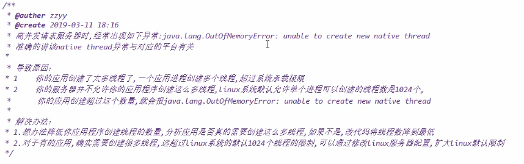

OOM
StackOverflowError （错误）
栈空间，默认大小为512K~1024K左右。循环方法调用，会导致栈空间溢出。
public class StackOverFlowErrorDemo {
public static void main(String[] args) {
myshow();
}
private static void myshow() {
myshow();
}
}
Exception in thread "main" java.lang.StackOverflowError
at com.zhou.java.oom.StackOverFlowErrorDemo.myshow(StackOverFlowErrorDemo.java:10)
at com.zhou.java.oom.StackOverFlowErrorDemo.myshow(StackOverFlowErrorDemo.java:10)
OutOfMemoryError (错误)
大量对象调用，堆溢出
public static void main(String[] args) {
String str = "test";
while (true) {
str += str + new Random().nextInt(1111111) + new Random().nextInt(222222222);
str.intern();
}
}
Exception in thread "main" java.lang.OutOfMemoryError: Java heap space
at java.util.Arrays.copyOf(Arrays.java:3332)
at java.lang.AbstractStringBuilder.ensureCapacityInternal(AbstractStringBuilder.java:124)
at java.lang.AbstractStringBuilder.append(AbstractStringBuilder.java:448)
at java.lang.StringBuilder.append(StringBuilder.java:136)
at com.zhou.java.oom.OutOfMemoryErrorDemo.main(OutOfMemoryErrorDemo.java:11)
GC overhead limit exceeded
-Xms10m -Xmx10m -XX:MaxDirectMemorySize=5m GC回收时间过长时会抛出OutOfMemoryError。超过98%的时间用来做GC 并且回收了不到2%的堆内存。连续多次GC都只回收了不到2%的极端情况下才会抛出。
public static void main(String[] args) {
int i = 0;
List<String> list = new ArrayList<>();
try {
while (true) {
list.add(String.valueOf(++i).intern());
}
} catch (Throwable e) {
System.out.println("===============" + i);
e.printStackTrace();
throw e;
}
}
===============145445
java.lang.OutOfMemoryError: GC overhead limit exceeded
at java.lang.Integer.toString(Integer.java:403)
at java.lang.String.valueOf(String.java:3099)
at com.zhou.java.oom.GCOverheadDemo.main(GCOverheadDemo.java:13)
Exception in thread "main" java.lang.OutOfMemoryError: GC overhead limit exceeded
at java.lang.Integer.toString(Integer.java:403)
at java.lang.String.valueOf(String.java:3099)
at com.zhou.java.oom.GCOverheadDemo.main(GCOverheadDemo.java:13)
Direct buffer memory (NIO中遇到的多)
-Xms10m -Xmx10m -XX:MaxDirectMemorySize=5m
public static void main(String[] args) {
System.out.println(VM.maxDirectMemory() / (1024.0 * 1024));
ByteBuffer byteBuffer = ByteBuffer.allocateDirect(6 * 1024 * 1024);
}
Exception in thread "main" java.lang.OutOfMemoryError: Direct buffer memory
at java.nio.Bits.reserveMemory(Bits.java:693)
at java.nio.DirectByteBuffer.<init>(DirectByteBuffer.java:123)
at java.nio.ByteBuffer.allocateDirect(ByteBuffer.java:311)
at com.zhou.java.oom.DirectBufferMemoryDemo.main(DirectBufferMemoryDemo.java:11)
unable to create new native thread （高并发）
同一个Thread如果多次start，会报 IllegalThreadStateException 
vim /etc/security/limits.d/90-nproc.conf
root用户，不限制个数 非root用户，默认1024。正常创建线程900多左右，就会出现上面的错误。
metaspace (元空间)
-XX:MetaspaceSize=8m -XX:MaxMetaspaceSize=8m
public class MetaSpaceDemo {
static class OOMTest {}
public static void main(String[] args) {
int i = 0;
try {
while (true) {
Enhancer enhancer = new Enhancer(); // cglib 动态代理
enhancer.setSuperclass(OOMTest.class);
enhancer.setUseCache(false);
enhancer.setCallback(new MethodInterceptor() {
@Override
public Object intercept(Object o, Method method, Object[] objects, MethodProxy methodProxy) throws Throwable {
return methodProxy.invokeSuper(o, args);
}
});
enhancer.create();
}
} catch (Exception e) {
System.out.println("============: " + i);
e.printStackTrace();
}
}
}
Exception in thread "main" java.lang.OutOfMemoryError: Metaspace
at java.lang.Class.forName0(Native Method)
at java.lang.Class.forName(Class.java:348)
at net.sf.cglib.core.ReflectUtils.defineClass(ReflectUtils.java:467)
at net.sf.cglib.core.AbstractClassGenerator.generate(AbstractClassGenerator.java:339)
at net.sf.cglib.proxy.Enhancer.generate(Enhancer.java:492)
at net.sf.cglib.core.AbstractClassGenerator$ClassLoaderData.get(AbstractClassGenerator.java:117)
at net.sf.cglib.core.AbstractClassGenerator.create(AbstractClassGenerator.java:294)
at net.sf.cglib.proxy.Enhancer.createHelper(Enhancer.java:480)
at net.sf.cglib.proxy.Enhancer.create(Enhancer.java:305)
at com.zhou.java.oom.MetaSpaceDemo.main(MetaSpaceDemo.java:27)